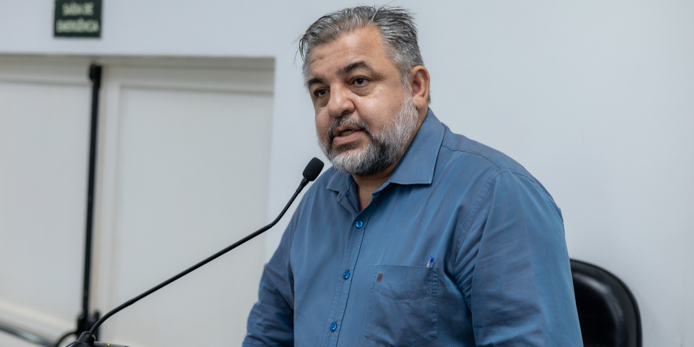
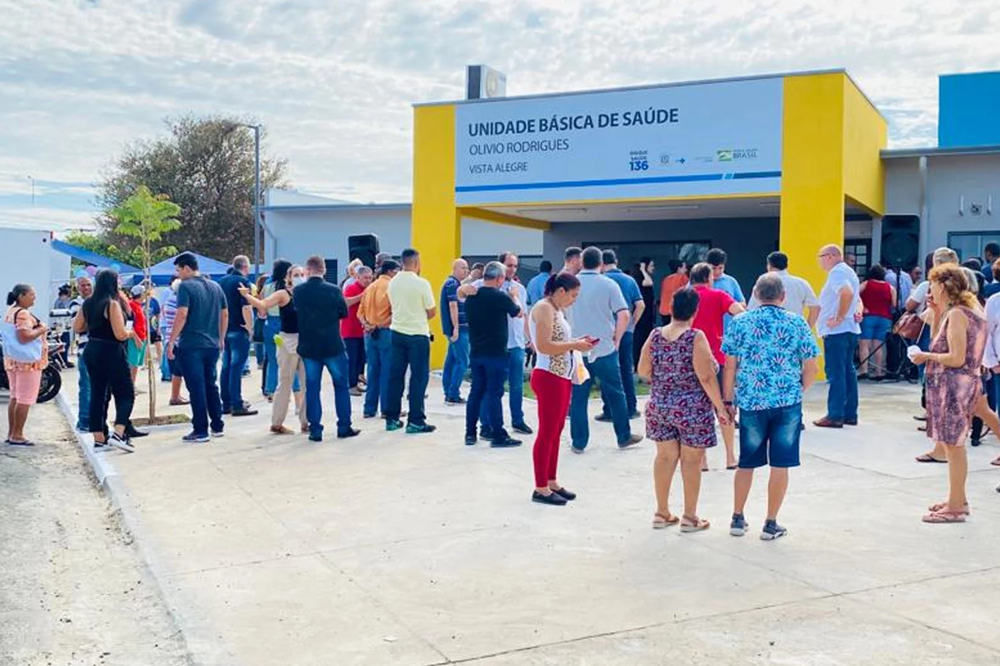
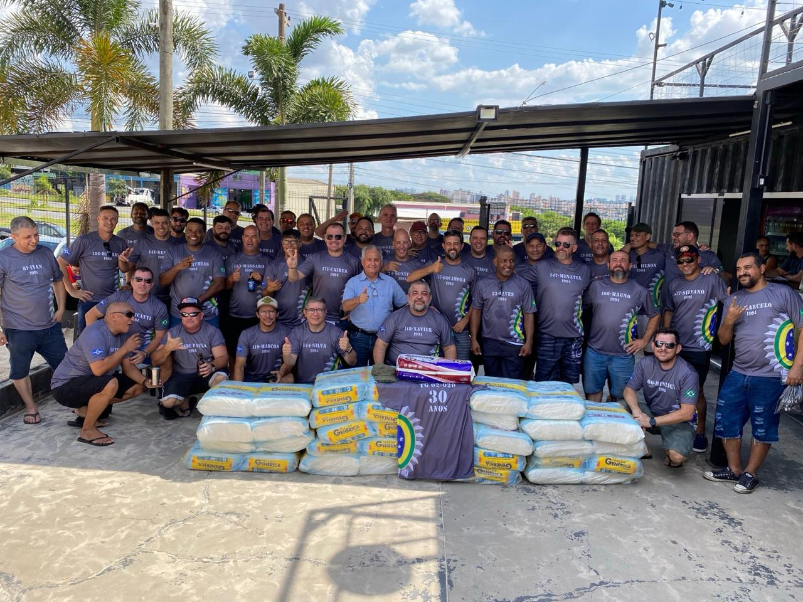
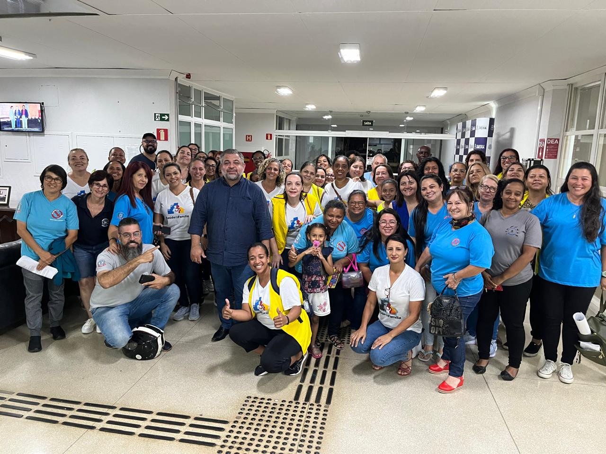
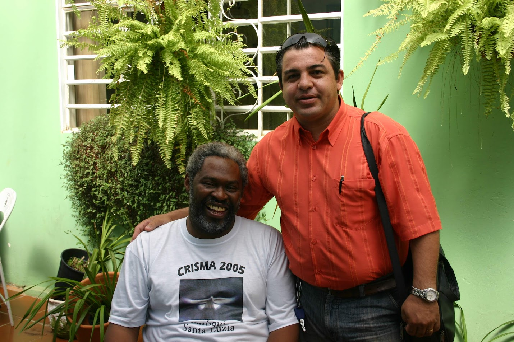
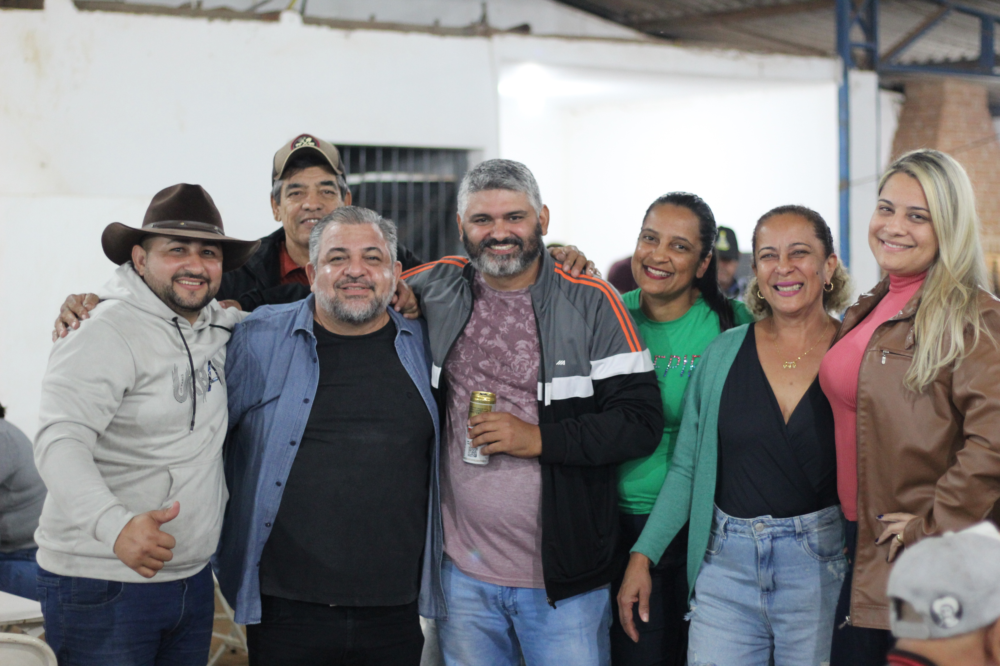

🏥
Saúde
UBSs, fila de exames, atendimento da rede municipal. Histórico em programas Saúde da Família, Saúde sobre Rodas e Mais Médicos.
Sou vereador de Limeira. Aqui no gabinete a gente escuta, encaminha e cobra resposta — saúde, educação, esporte, cultura e o dia a dia do seu bairro.

Nasci aqui em Limeira em 13 de fevereiro de 1975. Sou casado, pai de três e há anos faço parte da comunidade da Paróquia Santa Luzia, onde aprendi que fé sem trabalho não basta — e que trabalho sem cuidado com o próximo é só ofício.
Antes do mandato, atuei como assessor da Secretaria de Saúde da Prefeitura (2014–2016) em programas como Saúde da Família, Saúde sobre Rodas, Mais Médicos e Fim das Filas. É dessa escola que carrego a régua: o serviço público existe pra resolver a vida de quem mais precisa.
Hoje estou no terceiro mandato como vereador, pelo PP. Continuo da mesma forma — atendendo no gabinete, andando pelos bairros, ouvindo a comunidade e levando o que escuto pra dentro da Câmara.
UBSs, fila de exames, atendimento da rede municipal. Histórico em programas Saúde da Família, Saúde sobre Rodas e Mais Médicos.
Comissão Permanente de Educação e Ciências (secretário). Acompanhamento de APMs, AVCB das escolas e estrutura da rede.
Comissão Permanente (secretário) — Ginásio Vô Lucato, uso do Limeira Clube e iniciativas culturais nos bairros.
Iluminação, asfalto, limpeza pública. O que chega no gabinete vira indicação ou ofício pra Prefeitura.
Encaminhamento pra rede de assistência, documentação, vagas em serviços públicos, ações sociais com a comunidade.
Projetos de lei, requerimentos e indicações apresentados em plenário a partir das demandas da comunidade.

Paciente pode consultar sua posição na fila do SUS — exames, consultas e cirurgias — pelo site da Prefeitura, no computador ou no celular.

Tempo máximo de espera nas unidades da Rede Municipal de Saúde é de 60 minutos, por senha e ordem de chegada. Descumprimento pode ser denunciado à Secretaria de Saúde ou à Ouvidoria.
Projeto de lei que propõe a gestão compartilhada de praças com proprietários de trailers, com isenção da taxa de ocupação de solo. Objetivo: melhorar os cuidados com os espaços públicos por meio da gestão compartilhada com o comerciante local.
Espaço de discussão de ações para acompanhar as listas de espera dos serviços públicos de saúde — continuação direta da agenda de transparência que originou a Lei 5.976/2018.

Ação social na semana das crianças junto à Comunidade São João Evangelista, em parceria com a Turma do Bem e o Gaiola Clube de Limeira. Brinquedo, doce e atendimento pra criançada do bairro.
Voluntariado de longa data: Marco faz parte do grupo Xavier e amigos, mobilizado em ações da Turma do Bem ao longo do ano.
Solicitei reunião com o prefeito Mario Botion e o secretário de Obras Dagoberto Guidi pra detalhamento das obras do complexo do viaduto Paulo Natal aos moradores. Cerca de 100 pessoas participaram do encontro na Comunidade São João Evangelista.

Como integrante do grupo de ex-atiradores do Tiro de Guerra 94, participei da doação de 2 mil fraldas geriátricas ao Recanto dos Idosos Nossa Senhora do Rosário.

Atuação junto à categoria pela valorização dos agentes de saúde e combate às endemias — pagamento do piso salarial nacional e incentivo financeiro.

Anos de caminhada na Paróquia Santa Luzia, na Comunidade São João Evangelista, na Missão Intimidade e na Pascom Família. Fé, comunidade e serviço — a base de tudo.
Da Crisma na paróquia ao trabalho de pastoral hoje — caminho de fé compartilhado com Padre Maurício e tantos outros irmãos da comunidade.
Marco é corretor de imóveis (CRECI) — origem profissional que ele leva pro mandato. Presença e diálogo permanente com a categoria, defendendo o mercado imobiliário local e os profissionais que vivem dele.


Ação junto à Associação dos Moradores do Campo Alegre pra implantação de melhorias na rede de energia elétrica. Participação em reuniões com a Elektro pra encaminhar o que o bairro precisa.
Saíra é casa do mandato — bairro que escolheu o Marco e que o Marco escolheu pra ouvir todo mês.
Atuação junto aos comerciantes pra reverter a sinalização viária após mudanças das obras locais.
Solicitação ao deputado estadual Helinho Zanatta de emenda parlamentar destinada à compra de aparelhos auditivos fornecidos pelo poder público.
O formulário é direto. Sua mensagem cai no painel do gabinete e a equipe responde pelo WhatsApp.
Câmara Municipal de Limeira-SP. Atendimento pelos canais abaixo.